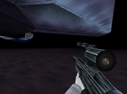
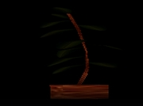
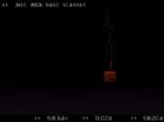

|
.
| Mysteres
de Perfect Dark : Base |
| Un
Agent de la CIA dans la Base ? Avec le Game Shark, en passant à travers
les Portes, vous devriez le voir. Entrez dans la Base SANS
DEGUISEMENT et vous verrez en Bas de l'un des Escalators
un Agent de la CIA, avec son Trenchcoat Beige Foncé. Que fait-il ici
? Quel rapport avec le Scénario ? |
| La
Plante Cachée dans le Hangar |



.
Vous
n'aurez besoin que de votre Horizon Scanner, et de pas mal de patience.
Allez derrière l'Avion dans le gros hangar (Niveau - Base) et
normalement, si vous essayez d'aller au fond, un mur Invisible vous
bloquera. Sortez votre scanner et regardez bien comme sur la Photo...
! |